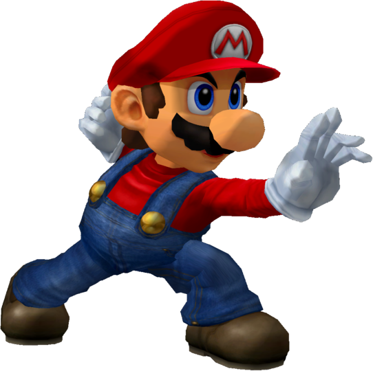

|  | Ranked 15th of tier list : MARIO |
| Weight | |
|---|---|
| 8-10th heaviest (10th in PAL) | |
| Shield stats | |
| Roll lenght | 17-18th longest |
| Shield size | 21-22nd biggest |
| Grab range | 21-22nd longest |
| Wavedash lenght | 7-9th longest |
| Movement stats | |
| Walking speed | 12-15th fastest |
| Turning speed | 4-7th fastest |
| Running speed | 11-15th fastest |
| Aerial stats | |
| Jump squat | 5 frames (8th fastest) |
| Short hop | 18-23rd highest |
| Aerial speed | 16th fastest |
| First jump height | 21-22nd highest |
| Seconde jump height | 16-19th highest |
| Total jump height | 23rd highest |
| Average fall speed | 16-18th fastest |
| Fast falling speed | 14-18th fastest |
| Falling speed | 16-18th fastest |
| Ledge stats | |
| 0-99% ledge roll | 22-23rd longest |
| 100%+ ledge roll | 21-22nd longest |
| 0-99% ledge attack range | 18-19th farthest |
| 100%+ ledge attack range | 19-20th farthest |
| Intangible ledgedash (Optimal) | 13 frames |
| Notable players | |
| Green Mario, PPMD | |
| Smashboard forum | |
| http://smashboards.com/forums/mario.67/ | |
Mario is ranked 15th on the current tier list in the E tier. Mario acts as a well-rounded character, with average weight, falling speed and other such attributes. He also has above-average comboing ability, and a very versatile grab game; his powerful back throw can gimp recoveries, and his down throw can chain-grab. Mario also has decent edge-guarding, with Fireball (a solid projectile), and his Cape which can easily and efficiently gimp almost every other characters recovery. Mario, however, lacks a reliable finisher, and his recovery is predictable and short, though he can extend it.